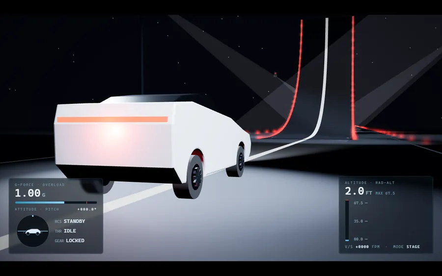
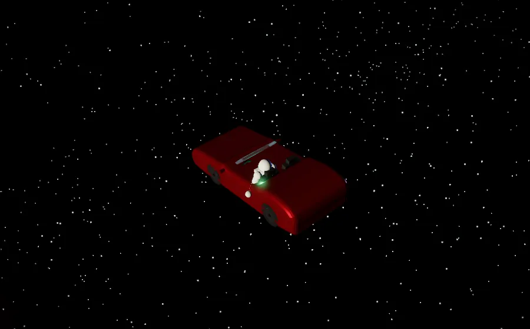
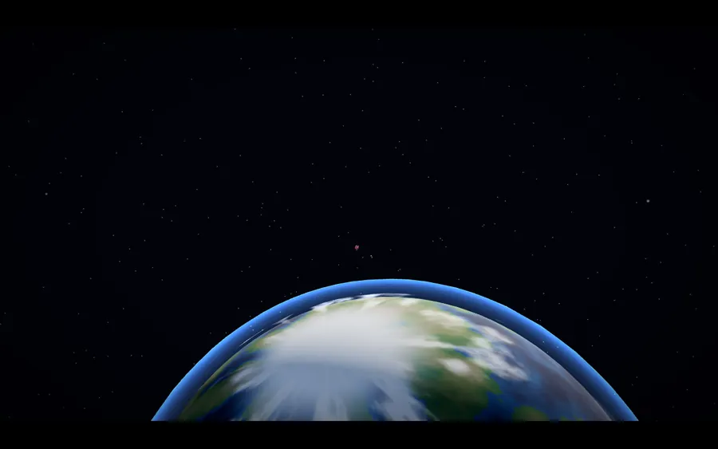
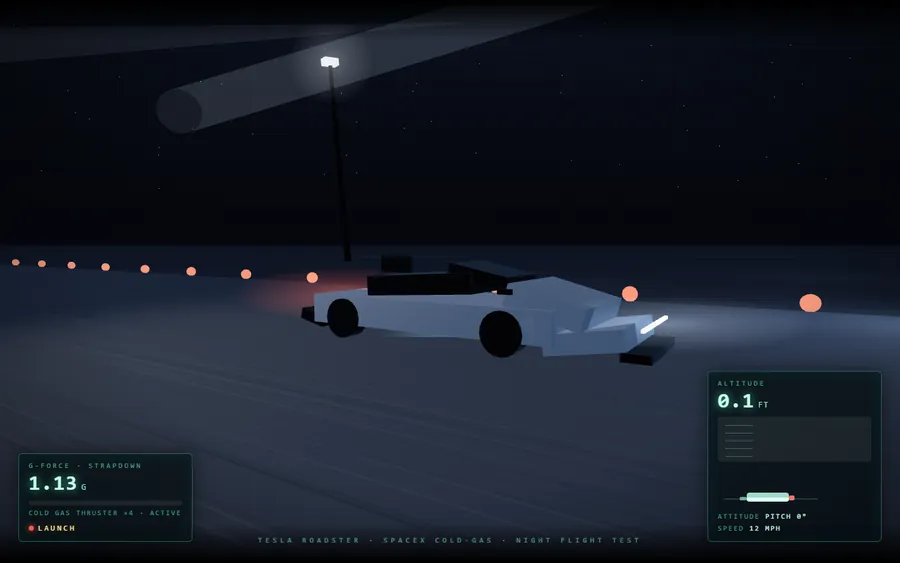
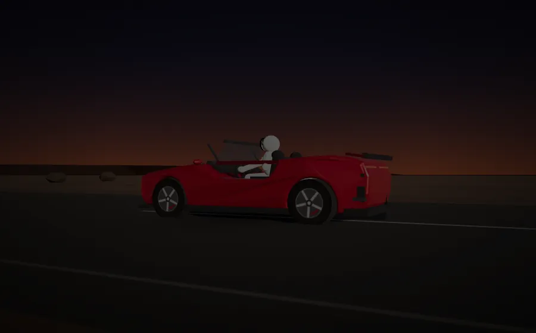
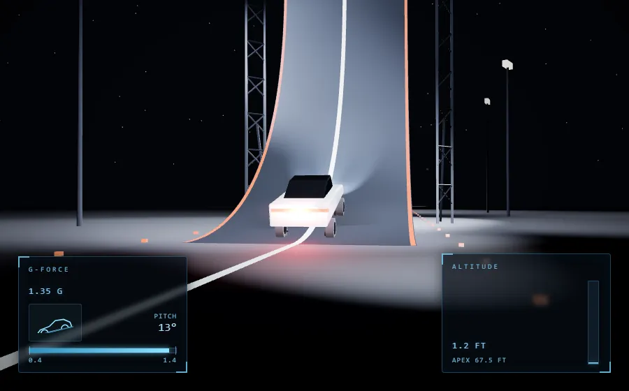
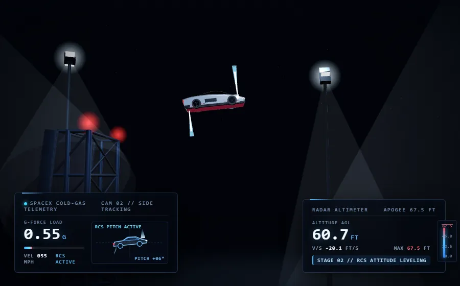

2018 年 Falcon Heavy 把一台樱桃红的特斯拉 Roadster 和穿着宇航服的 Starman 送入太空 —— 车在真空里缓缓翻滚,地球与太阳在身后转动。这一题让模型做出这个场景(或它的近亲:冷气推进的垂直起飞、飞跃与软着陆),考的是整车造型还原、Starman 的坐姿与手臂、真实感的太空光影(单侧阳光、地球曲率、星空),以及推进与轨迹的物理说服力。下面按模型版本归档,缩略图为真实渲染效果,点击卡片查看可交互的在线页面。






